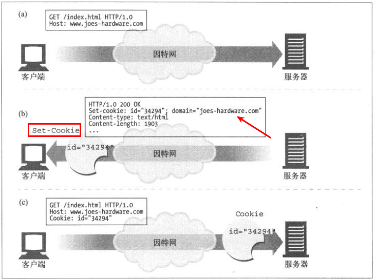
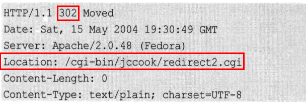
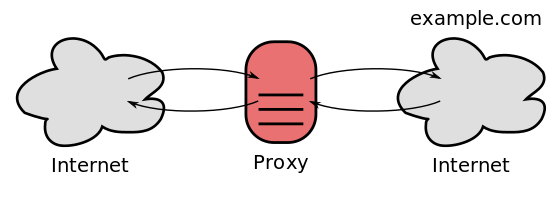
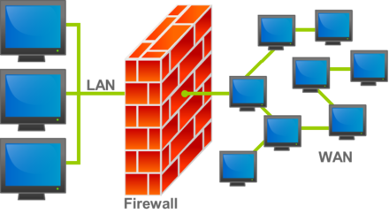
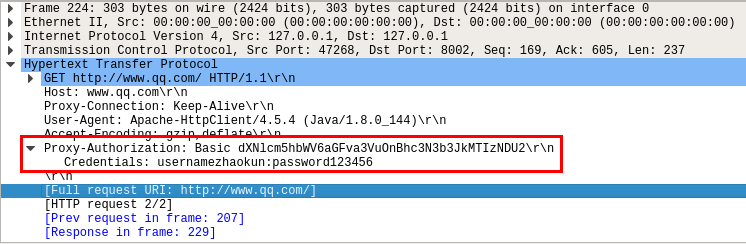

HTTP
HTTP 1.1
新特性:
- 持久连接: 客户端发送
connection: keep-alive与服务器建立持久连接 - 块编码:
transfer-encoding指明字节流将会分块发送，没一个块的长度以十六进制表示，其后会有一个回车换行符，然后是具体数据:
|
|
实际发送为:
|
|
- 状态码 100: 当客户单准备发送一个较长的请求体，而不确定服务端是否会接受，就可能发送一个
Expect: 100-continue信息，如果接受，则会响应HTTP/1.1 100 Continue:
|
|
缓存
服务器用 HTTP/1.0+ 的 Expires 首部或 HTTP/1.1 的 Cache-Control: max-age 响应首部来指定过期日期，同时还会带有响应主体。Expires 首部和Cache-Control: max-age 首部本质上做的事情是一样的，但是由于 Cache-Control: max-age 首部使用的是相对时间(秒)而不是绝对日期，因此我们更倾向于使用比较新的 Cache-Control: max-age 首部。
|
|
Cookie
可以笼统地将 Cookie 分为两类: 会话 Cookie 和持久 Cookie，它们之间唯一的区别就是它们的过期时间。服务器通过 Set-Cookie 或 Set-Cookie2 HTTP 响应首部将其贴到用户身上去:

产生 Cookie 的服务器可以向 Set-Cookie 响应首部添加一个 Domain 属性来控制哪些站点可以看到那个 Cookie，像下面这样写可以实现所以以 baidu.com 结尾的网站都能看到这个 Cookie:
|
|
HTTPS 具体数据传输流程
HTTP 状态码
- 301: 永久移动
- 302: 临时移动

- 429: TOO MANY REQUESTS
- 502: BAD GATEWAY
参考:
Http Proxy 代理
Web proxies 转发 HTTP requests. The request from the client is the same as a regular HTTP request except the full URL is passed, instead of just the path.
|
|
This request is sent to the proxy server, the proxy makes the request specified and returns the response.
|
|
Some web proxies allow the HTTP CONNECT method to set up forwarding of arbitrary data through the connection; a common policy is to only forward port 443 to allow HTTPS traffic.
Reverse proxies 反向代理
A reverse proxy taking requests from the Internet and forwarding them to servers in an internal network. Those making requests connect to the proxy and may not be aware of the internal network.

Open proxies 开放代理
An open proxy forwarding requests from and to anywhere on the Internet.

Firewall 防火墙
In computing, a firewall is a network security system that monitors and controls incoming and outgoing (进来和出去的流量) network traffic based on predetermined security rules (安全规则). A firewall typically establishes a barrier between a trusted internal network and untrusted outside network, such as the Internet.

Network layer or packet filters 包过滤
Newer firewalls can filter traffic based on many packet attributes like source IP address, source port, destination IP address or port, destination service like HTTP or FTP. They can filter based on protocols (协议), TTL values (TTL 值), network block of the originator, of the source, and many other attributes.
Network address translation
Firewalls often have network address translation (NAT) functionality, and the hosts protected behind a firewall commonly have addresses in the “private address range”
HTTP Method
The HTTP/1.0 specification defined the GET, POST and HEAD methods and the HTTP/1.1 specification added 5 new methods: OPTIONS, PUT, DELETE, TRACE and CONNECT.
HEAD
The HEAD method asks for a response identical to that of a GET request, but without the response body (不要 body 部分). This is useful for retrieving meta-information written in response headers, without having to transport the entire content.
OPTIONS
The OPTIONS method returns the HTTP methods that the server supports for the specified URL. This can be used to check the functionality of a web server by requesting ‘*’ instead of a specific resource.
CONNECT
The CONNECT method converts the request connection to a transparent TCP/IP tunnel, usually to facilitate SSL-encrypted communication (HTTPS) through an unencrypted HTTP proxy.
HTTP 代理认证
当使用 HttpClient 设置代理认证的时候:
|
|
实际上，这个代理认证的用户名和密码将会被添加进 header 里面:
|
|
实际的抓包也验证了我们的想法:

Realm 问题:
From RFC 1945 (HTTP/1.0) and RFC 2617 (HTTP Authentication referenced by HTTP/1.1)
The realm attribute (大小写不敏感) is required for all authentication schemes which issue a challenge. The realm value (大小写敏感), in combination with the canonical root URL (根 URL) of the server being accessed, defines the protection space (保护空间). These realms allow the protected resources on a server to be partitioned (划分为几部分) into a set of protection spaces, each with its own authentication scheme and/or authorization database. The realm value is a string, generally assigned by the origin server, which may have additional semantics specific to the authentication scheme.
In short, pages in the same realm should share credentials. If your credentials work for a page with the realm “My Realm”, it should be assumed that the same username and password combination should work for another page with the same realm.
Basic access authentication:
In the context of an HTTP transaction (HTTP 事务), basic access authentication is a method for an HTTP user agent to provide a user name (用户名) and password (密码) when making a request.
HTTP Basic authentication (BA) implementation is the simplest (最简单的) technique for enforcing access controls to web resources because it does not require cookies, session identifiers, or login pages; rather, HTTP Basic authentication uses standard fields in the HTTP header (HTTP 头), removing the need for handshakes.
Server Side: When the server wants the user agent to authenticate itself towards the server, the server must respond appropriately to unauthenticated requests. To unauthenticated requests, the server should return a response (返回一个响应) whose header contains a HTTP 401 Unauthorized status and a WWW-Authenticate field. The WWW-Authenticate field for basic authentication (used most often) is constructed as following:
|
|
Client Side: 需要发送：
|
|